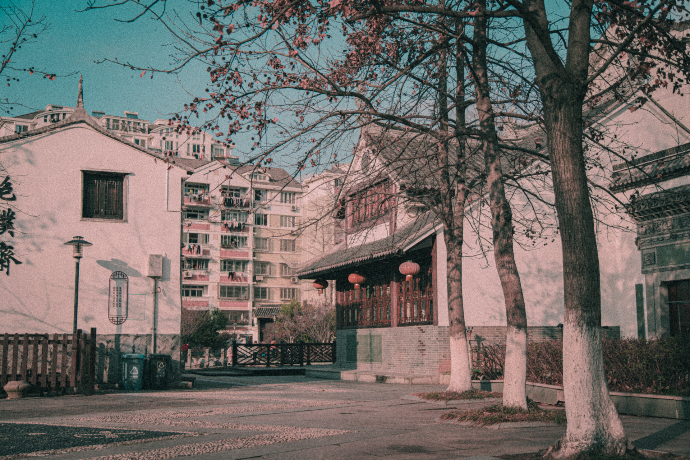
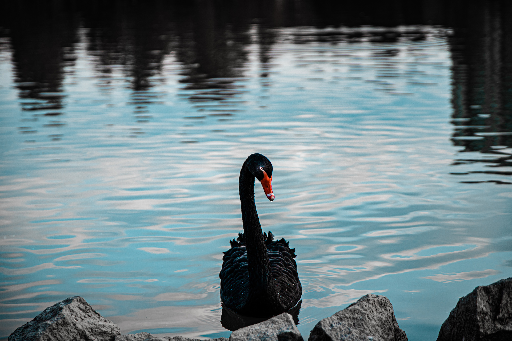
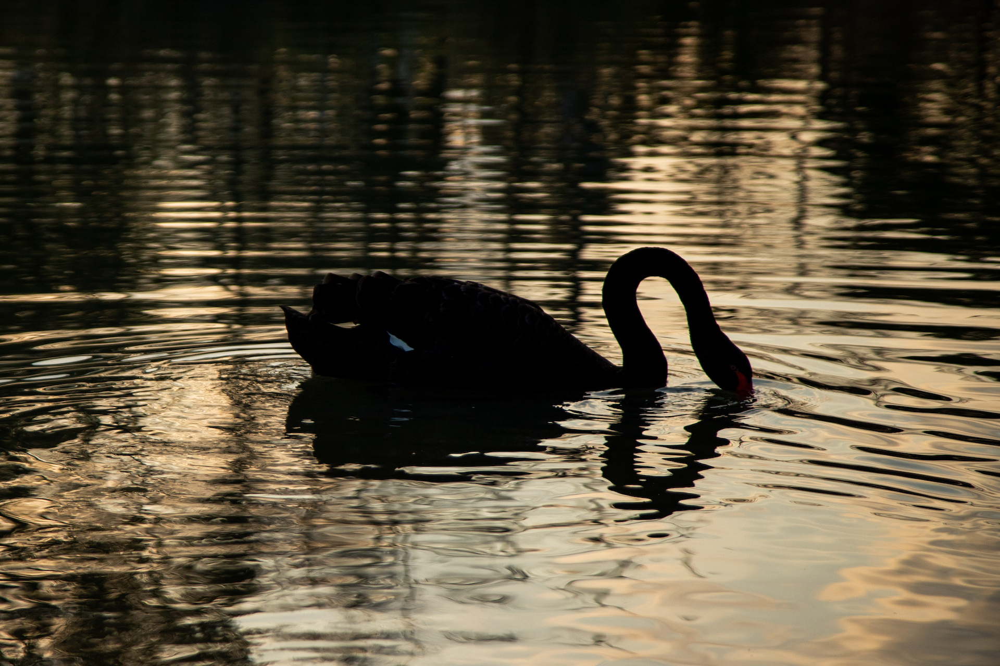

时间不是很好，约莫下午三点时分，阳光还略显强烈，但天气多云把阳光放柔，天然的柔光罩也有不错的效果，隐约透露出的强光也能拍出独特的风味，但可能有些挑战相机的高感低感。
这幅图用了明显的线条引导，强烈的透视和水面的倒影让画面更有立体感
随手的拍摄，但并排的树确实创造了良好的氛围，调色使用较暖的颜色和青色的天空创造出略显回忆的氛围。
阳光的强烈穿过密云。强烈的光比挑战相机的宽容度。为了保留天空的细节我进行向左曝光，并且在后期的时候拉一些颗粒来混淆暗部体谅后的噪点。
 偶然发现公园中的几只黑白天鹅，第一幅图用了质感较强的调色方案，冷色调和较高的锐度和清晰度显出动物的锐利，提高了眼睛部位的亮度。第二幅图用较暖的色调并利用水面的倒影和波纹形成了一幅对称的图案，暧昧温馨。
云雾散开，正是拍摄的黄金时段。干净的公园和新起的大厦在夕阳的余晖下变暗。图中的鸟完全是意外，但却给这幅图更强的韵味。调色将日光拉红饱和度升高，暗部使用减法并在后期上深蓝色，来达到一种细微的青橙色风格。